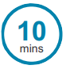

The Substainable Development Goals (SDGs)
“We only have one planet. We have nowehere else to go. If we use our creative powers properly we don’t need anywhere else. If we take care of it, and each other, everything we need is right here”

Introducing The Substainable Development Goals
Subject
This can be used for an assembly, tutor time or class activity
Find out more
For more information about the SDGs visit www.globalgoals.org
Total time:

Learning Outcome
Learners can explain what the SDGs are and why they are important
For:
• Advice on how to teach the SDGs • An SDGs booklet written for children • More lesson plans to dig deeper into the SDGs and a link to additional resources • A gallery of SDGs images • Help with encouraging children to take action Visit http://worldslargestlesson.globalgoals.org/resources-for-teaching-the-sdgs-in-nigeria/
Age Range:

Preparation
Learners can explain what the SDGs are and why they are important
Introducing the SDGs
Introduction 
Explain that you are here to talk about the Global Goals or the Sustainable Development Goals (SDGs)
(these are the same thing). As students enter the room have the following question displayed –
‘What are the biggest problems faced by people in our community/ country /worldwide?”
(adapt as appropriate)
Encourage the children to think from the perspectives of others so for example you could say
“Imagine you have been given the power to change things, what would you change in your
community, society and country?”
In pairs, students try and identify some of the biggest problems facing their community, their country, or the
world. Take some suggestions from the group. These could be written onto a board at the front.
Use appendix 1 to help prompt if necessary.
SDGs
Show students the SDGs, pointing out which goals relate to the problems they have identifed. Compare
their lists of problems with the SDGs, displayed at the front.
In a classroom for example, you could have 17 students stand at the front with their backs to the room.
Each student holds a sheet of paper with one of the SDGs and their numbers written on it. When someone
mentions a problem tackled by their Goal they turn around.
Understanding SDGs 
Students watch Sir Ken Robinson’s animation on large screen, computer screens or group together to watch on a mobile phone http://worldslargestlesson.globalgoals.org/resources-for-teaching-the-sdgs-in-nigeria. Students could also read a comic book from www.globalgoals.org/worldslargestlesson, scrolling through each frame on mobile phone or tablet.
Activity
1. To end the lesson, ask each student to write a sentence reflecting their views on the SDGs and
what they mean to them. Restrict the amount of words students are allowed to use to create a tweet
to Twitter: @WorldsLessonNG #WorldsLargestLessonNG
2. Print or draw squares on paper of approx 12cm x 12cm. Give each student a blank square of paper
and ask them to draw a single comic frame image showing themselves using their superpower. Ask them
to add into a speech bubble their idea of how they can help with SDGs. Collect the squares and make a
display at school, share it with us on Facebook @WorldsLessonNG.
Problems faced by people today
(used as prompt if necessary).
• Poverty
• Inequality between countries
• Hunger
• Poor health and disease
• Dirty water
• Lack of sanitation
• Poor education – some children can’t go to school
• Low-paying and not enough jobs
• Low economic growth – countries do not earn enough money to pay for everything their people need
• A mono economy (crude oil)
• Gender inequality – men and women are treated differently and not given the same opportunities
• War, fghting and instability
• People don’t feel safe
• Violence between people
• Corruption and injustice
• No respect for human rights
• Not enough energy for everyone to live comfortably
• Weak infrastructures, poor technology and communications
• Un-safe towns and cities
• Unsustainable cities that consume more than the world can produce
• There’s too much wastage of resources and not enough re-cycling
• Climate change
• Polluted seas and oceans
• Damaged habitats
• We have limited access to technology and expensive mobile phones and computers
• People don’t feel they are protected properly
• Lack of empathy and kindness
• Population growth
• Obesity
• Corruption and injustice in high and low places in search of wealth and materialism
• Racism
• Breakdown of communities
• Societies or Countries not working together to agree on anything